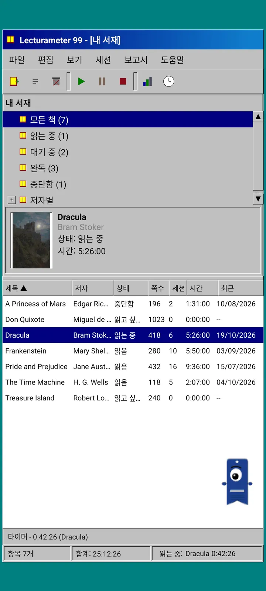
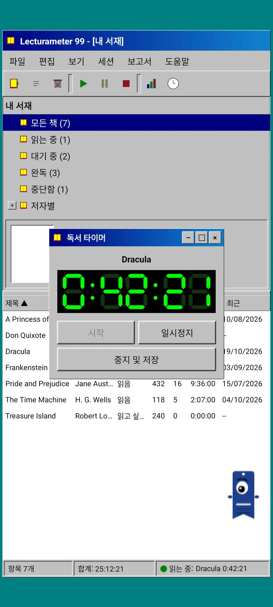
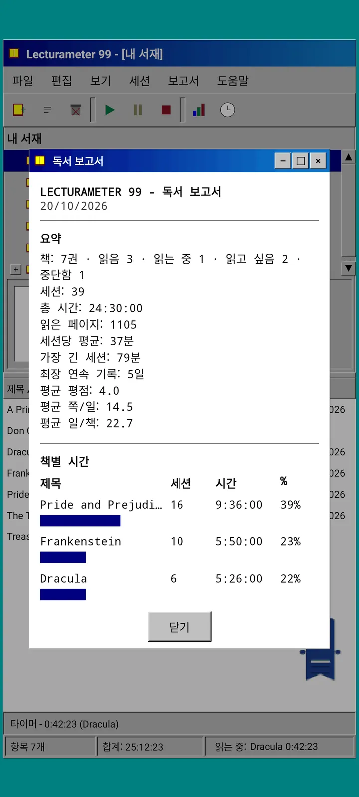
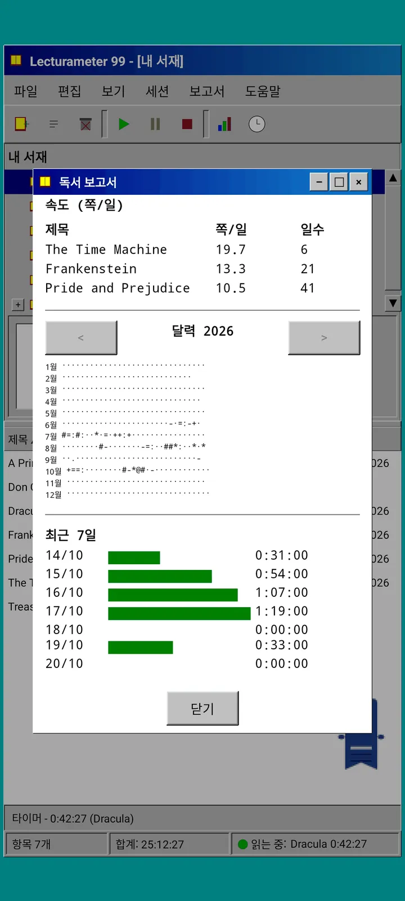
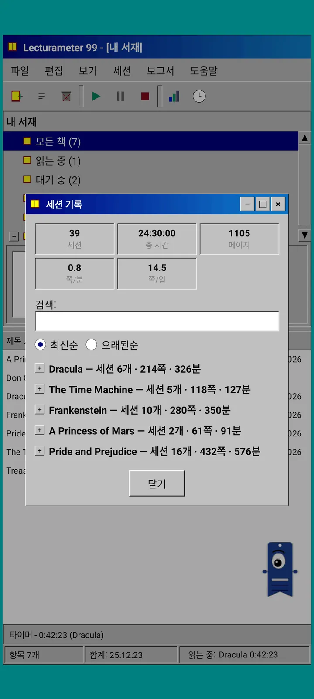
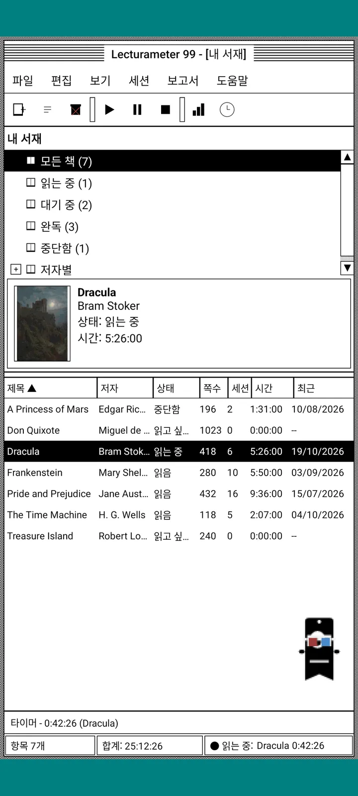
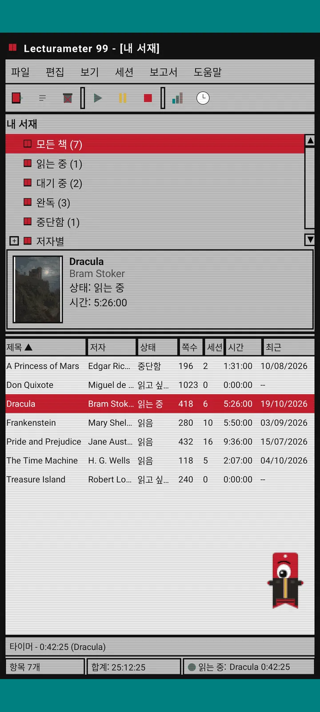
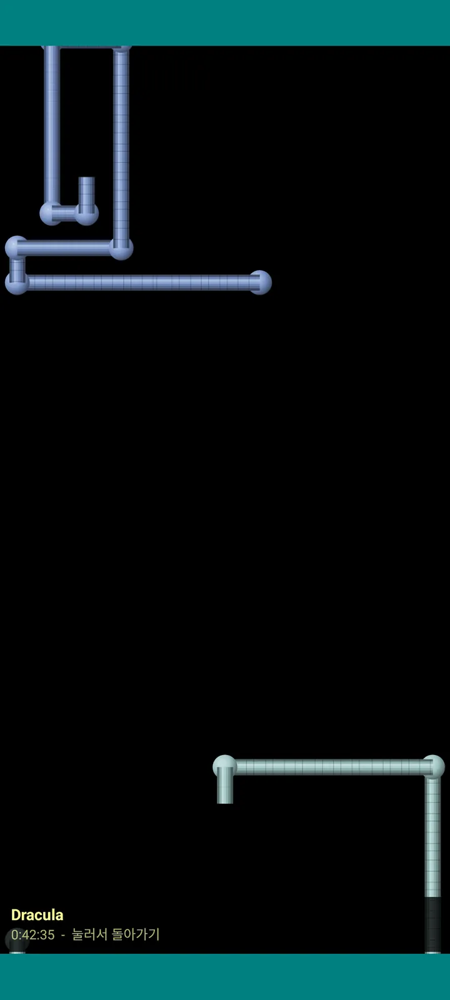

Lecturameter 99: 독서 기록
1999년에 CD-ROM으로 설치한 것 같은 Lecturameter. 창, 메뉴, 표를 갖춘 독립 앱으로, 실제 백업을 열어요.
이전 Lecturameter 1999. 스토어에는 아직 예전 이름으로 보일 수 있어요. 같은 앱이에요.

어떤 앱인가요
휴대폰 속에 들어간 구십년대 말 데스크톱 프로그램. 청록색 바탕화면 위의 창 하나, 메뉴 바, 툴바, 폴더 트리, 빽빽한 표, 상태 표시줄.
- 서재 트리: 모든 책, 읽는 중, 대기 중, 완독, 중단, 저자별
- 제목, 저자, 상태, 페이지, 세션, 시간, 마지막 독서가 있는 표. 열 머리글을 누르면 정렬돼요
- Lecturameter와 같은 카탈로그를 쓰는 실제 책 검색
- Lecturameter 백업과 Goodreads CSV를 가져오고 내보내요. 데이터가 손실 없이 오가요

왜 만들었나요
하나의 실험이에요. 실제 앱은 건드리지 않고, 완전히 다른 디자인 전제로 Lecturameter의 아이디어를 처음부터 다시 만들어 보는 거죠. 여러 재해석 중 1999 버전이 가장 마음에 들어서 재미 삼아 완성했고, 완전한 클라이언트로 만들었어요. 일부러 Lecturameter보다 단순해요. 실험이라서 원칙적으로 더 이상 개발하지 않을 거예요.
- 초록색 LCD 화면이 있는 떠 있는 창의 타이머. 옮길 수 있고, 작업 표시줄로 최소화되며, 상태 표시줄에서 계속 시간을 재요
- 정지하면 세션 저장 대화상자에서 페이지, 퍼센트 또는 시간만으로 기록할 수 있고, Lecturameter와 똑같이 속도를 계산해요
- 저장된 세션은 Lecturameter 세션이에요. Lecturameter 99 백업을 내보내서 Lecturameter에서 가져오면 최신 앱으로 돌아가요.

독서 보고서
통계는 고정폭 텍스트로 인쇄한 보고서예요. 요약, 블록 막대로 보는 책별 시간, 하루 페이지 수로 본 속도.

연간 달력
1년의 하루하루가 읽은 페이지 수에 따라 한 글자로 그려지고, 아래에는 최근 7일이 블록 막대로 표시돼요.

세션 기록
더하기와 빼기로 펼치는 트리에 책별로 묶인 세션. 위쪽에 다섯 가지 숫자가 있어요: 세션, 총 시간, 페이지, 분당 페이지, 일일 페이지.
테마
Classic 98은 무료이고 기본값이에요. 팩은 Android에 6개, iPhone에 4개를 더하며, 각각 고유한 배경과 소리가 있어요.

보기 메뉴에서 골라요
보기, 테마... 를 선택하면 테마 창이 열려요. Android는 7개, iPhone은 5개. 변경 사항은 모든 창, 타이머, Pagi에 한 번에 적용돼요.
- 클래식 98, 무료이자 기본: 회색 창, 남색 제목 표시줄, 청록색 바탕화면
- 테마 팩: 1984, Gumdrop, Memory, Towers, Core, 8-bit. iPhone에서는 1984와 Gumdrop 제외
- 테마마다 고유한 바탕화면과 터치, 창, 타이머 소리가 있어요
- 조용히 읽고 싶다면 보기, 테마 소리에서 소리를 끌 수 있어요

클래식 98
회색 창, 남색 제목 표시줄, 청록색 바탕화면. 무료이고, 앱을 열면 처음 보이는 테마예요.

1984
점 무늬와 네모난 창이 있는 1비트 흑백 데스크톱. Android 전용.

젤리
반투명 컬러 플라스틱, 둥근 버튼, 배경의 줄무늬. Android 전용.

메모리
구십년대 디스크 게임기 메뉴를 짙은 파란색으로.

타워
또 다른 구십년대 디스크 게임기, 밤하늘색에 하늘색 선.

코어
절대 꺼지지 않는 화면 같은 검정과 초록의 콘솔.

8비트
굵은 픽셀, 적은 색, 각진 글자.

결제 전에 먼저 써 보세요
잠긴 테마를 누르면 앱 전체가 그 테마로 바뀌어요. 사지 않고 닫으면 이전 테마로 돌아가요.
화면 보호기
타이머가 돌아가고 휴대폰을 건드리지 않을 때만 나타나요. 1분, 3분, 5분 뒤에 나오거나, 아예 안 나오게 할 수 있어요. 한 번 누르면 돌아오고 타이머는 계속 돌아가요.

날아다니는 책
픽셀 책들이 검은 화면 위로 표지를 퍼덕이며 날아가요.

글자 들판
별이 흐르듯 여러 문자의 글자들이 천천히 지나가요.

페이지 파이프
페이지로 된 파이프가 화면이 가득 찰 때까지 저절로 그려져요.

튕기는 Pagi
화면 가장자리에 부딪혀 튕기는 Pagi.

독서 시계
큼직한 LCD 숫자로 보여 주는 세션 시간.

Pagi 99와 의상들
Pagi도 1999년으로 떠나요. 픽셀 모습으로 화면을 자유롭게 돌아다니는, 그 시절 사무용 도우미처럼요. 끌어다 놓을 수 있고, 탭하면 말하고, 팁을 노란 말풍선으로 보여 줘요. 의상은 8벌이고 보기, Pagi 의상... 에서 고르며, 결제 전에 입어 볼 수 있어요.
- 카세트 플레이어
- 거꾸로 쓴 모자
- 3D 안경
- 네온 선글라스
- 손에 든 플로피 디스크
- 가죽 재킷
- 포켓 펫
- 종이 왕관
상점
독서 기록용으로는 앱이 무료이고 모든 기능이 다 있어요. 구매할 수 있는 건 겉모습만 바꿔요.
앱 전체를 기간 제한 없이.
- 서재, 검색, 타이머, 세션
- 독서 보고서와 세션 기록
- 페이지, 퍼센트 또는 시간으로 기록하는 수동 세션과 저장된 세션
- 오늘의 팁, 그리고 도움말 메뉴에서 의견 보내기
- Lecturameter 백업과 Goodreads CSV 가져오기·내보내기
- 클래식 98 테마와 Pagi 99
- 계정 없음, 광고 없음
한 번만 결제, 구독 없음.
- 테마 팩, €3.49: 배경과 소리가 있는 테마 6개, 그리고 화면 보호기
- 화면 보호기, €1.99: 화면 보호기 5개
- Pagi 의상, €1.99: 의상 8벌
- 1999 전부, €4.49: 테마, 화면 보호기, 의상
Android 전용: 커피 한 잔 사 주고 싶다면 도움말 메뉴의 선택형 팁.
iPhone에는 팁과 1984, Gumdrop 테마가 없어요(Apple이 허용하지 않아요). 나머지는 모두 같아요.
테마와 의상은 결제 전에 실시간으로 써 볼 수 있어요. 사지 않고 닫으면 원래대로 돌아가요.
Lecturameter와 무엇이 다른가요
Lecturameter와 같은 점
- 같은 데이터: 책, 세션, 상태, 점수, 노트. 백업 파일도 두 앱에서 같아요.
- 제목이나 저자로 책 검색.
- 진짜 타이머: 백그라운드에서도, 앱을 닫아도 계속 시간을 재요.
- 계정도 광고도 없어요. 인터넷은 책 검색에만 쓰고, 켜 둔 경우에만 가명 사용 통계와 충돌 보고서에 써요(도움말, 개인정보 보호에서 끌 수 있어요).
- 50개 언어로 제공돼요.
1999 에디션에만 있는 것
- 1999년 데스크톱 인터페이스. Material은 없어요.
- 진짜 창: 드래그하고, 최소화하고, X 버튼으로 닫아요.
- 문자로 그린 달력이 있는 텍스트 독서 보고서.
- 길게 누르면 나오는 컨텍스트 메뉴, 키보드를 연결하면 단축키.
- 팁 말풍선이 있는 픽셀 Pagi 99.
- 고유한 배경과 소리가 있는 선택형 테마, 타이머가 도는 동안의 화면 보호기, Pagi 의상.
일부러 뺀 것
- Pro도, 구독도 없어요. 독서 기록은 전부 무료이고, 상점은 겉모습만 팔아요.
- 챌린지, Bingo, 연간 Wrapped, 위젯은 없어요.
- 몰입 세션, 배경 소리, Google Drive 백업은 없어요. 백업은 파일로 저장돼요.
받기
Lecturameter 99는 무료이며 iPhone과 Android에서 쓸 수 있어요.
블로그 글을 읽어 보세요 어떻게 탄생했고 무엇을 기대할 수 있는지 알 수 있어요.